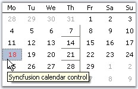
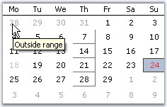

MonthCalendarAdv triggers events whenever the date is selected and changed. The most widely used events are discussed below.
|
MonthCalendarAdv Events |
Description |
|
Border3DStyleChanged |
Event is raised when Border3DStyle property is changed. |
|
BorderColorChanged |
Event is raised when BorderColor property is changed. |
|
BorderSidesChanged |
Event is raised when BorderSides property is changed. |
|
BorderStyleChanged |
Event is raised when BorderStyle property is changed. |
|
DateCellQueryInfo |
It can be handled to provide custom formatting for calendar cells. The event handler receives an argument of type DateCellQueryInfoEventArgs. The following are the event properties associated with DateCellQueryInfoEventArgs argument. |
|
It occurs when a date is selected from the calendar. It can be handled to retrieve the selected date of the MonthCalendarAdv. The event handler receives an argument of type EventArgs. | |
|
DateChanged |
Handled when a selected date is changed. |
|
FirstDayOfWeekChanged |
Handled when the first day of the week is changed using FirstDayOfWeek property. |
|
NoneButtonClick |
Handled when the None button is clicked. |
|
ShowWeekNumbersChanged |
Handled when ShowWeekNumbers property is changed. We can customize the appearance of the week numbers within this handler. |
|
StretchScrollImageChanged |
Handled when StretchScrollImage property is changed. |
|
ThemedBorderChanged |
Handles when ThemedBorder property is changed. |
This event is handled to provide custom formatting for calendar cells.
|
Members |
Description |
|
ColIndex |
Specifies the column index of GridCell. |
|
DateValue |
Specifies the date value. |
|
RowIndex |
Specifies the row index of GridCell. |
|
Style |
Specifies GridStyleInfo object. |
|
Handled |
Indicates whether the event has been handled. It is a bool value. |
|
IsCurrentCell |
Returns the current cell at run time. |
|
IsOutsideRange |
Specifies whether the query is outside the range of a month. |
Example
The style parameter can be used to set tooltips for MonthCalendarAdv control as follows. This example uses IsCurrentCell, IsOutsideRange, ColIndex and Handled members.
|
[C#]
private void monthCalendarAdv1_DateCellQueryInfo(object sender, DateCellQueryInfoEventArgs e) { //Identifies current cell and sets the tooltip text for the calendar if (e.IsCurrentCell) { e.Style.CellTipText = "Syncfusion calendar control"; e.Style.CellAppearance = Syncfusion.Windows.Forms.Grid.GridCellAppearance.Flat; e.Style.BackColor = Color.LightSteelBlue; } //Sets Tooltip text for the cells outside range else if (e.IsOutsideRange) e.Style.CellTipText = "Outside range"; //Sets Cell Appearance to "Raised" for fourth Column else if (e.ColIndex == 4) e.Style.CellAppearance = Syncfusion.Windows.Forms.Grid.GridCellAppearance.Raised; else //event is stopped e.Handled = false; } |
|
[VB.NET]
Private Sub monthCalendarAdv1_DateCellQueryInfo(ByVal sender As Object, ByVal e As DateCellQueryInfoEventArgs) 'Identifies current cell and sets the tooltip text for the calendar If e.IsCurrentCell Then e.Style.CellTipText = "Syncfusion calendar control" e.Style.CellAppearance = Syncfusion.Windows.Forms.Grid.GridCellAppearance.Flat e.Style.BackColor = Color.LightSteelBlue 'Sets Tooltip text for the cells outside range ElseIf e.IsOutsideRange Then e.Style.CellTipText = "Outside range" 'Sets Cell Appearance to "Raised" for fourth Column ElseIf e.ColIndex = 4 Then e.Style.CellAppearance = Syncfusion.Windows.Forms.Grid.GridCellAppearance.Raised Else e.Handled = False 'event is stopped End If End Sub |
 Note:
Note:
1. In Fig 1, 18th is identified as the current cell and the tooltip is displayed. Also the background of the current cell is painted with LightSteelBlue.
2. Edges of the 4th column cells (ColIndex=4), other than the current cell are set to "Raised" and hence shows a raised appearance.
3. In Fig 2, user tries to query the cells outside the range, i.e inactive month dates and the respective tooltip is displayed.

Figure 243

Figure 244
See Also